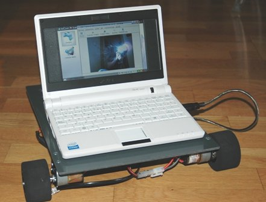
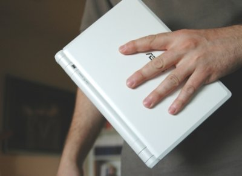

Este fin de semana Andrés y yo nos hemos comprado un Portátil Asus EEE modelo 701 con Linux para utilizarlo como cerebro en el Robot FlatBot.
La verdad es que estamos emocionados 🙂 Este portátil es perfecto para la robótica: consume poco, tiene una webcam integrada, Wifi, todos los periféricos que hemos probado funcionan muy bien: conversores USB-serie, cámaras de vídeo, ipod, conversores USB-serie… Pero lo mejor de todo son sus dimensiones: 225 x 165 x 21mm

En este vídeo se puede ver el robot en acción. Andrés lo está telecontrolando desde otro Portátil por ssh.

La configuración es muy sencilla. El Asus está sobre el
FlatBot. A través de un puerto USB
(y usando un conversor USB-serie) está conectado a la
tarjeta Skypic que tiene grabado
este firmware
hecho en C. En el Asus se abre un terminal de comunicaciones (minicom).
La Skypic activa los motores del robot cuando recibe los caracteres 'o' (izquierda),
'p' (derecha), 'q' (adelante), 'a' (atrás) y espacio (parar) por el puerto serie.
Para telecontrolar el robot sólo hay que abrir una sesión ssh por wifi,
entrar en el Asus, ejecutar el minicom y usar las teclas anteriores para moverlo.
Este blog es muy inspirador.
Los PDA (con SO) e incluso algunos teléfonos móviles también son una buena opción para reducir aun más el tamaño y obtener suficientes prestaciones para IA en red. El descubrimiento con ASUS y su compatibilidad están muy bien.
Al ver este vídeo, me ha inspirado recuperar alguna base que tengo por ahí y usarlo con mi Tablet-PC.
También, en otra alternativa con laptop o notebook (no tablet), se puede incorporar un mecanismo abatible 0º a 180º de la pantalla para mostrar al usuario la imagen a pantalla completa del rostro de un robot virtual o un rostro más realista. Otra idea más simple es únicamente como video-teléfono-IP que se acerca automáticamente al usuario cuando recibe una video-llamada.
A por ello…
🙂
😀
¿Sabes lo que más no ha gustado del FlatBot? Lo increible que resulta que una cosa tan simple tenga tantas utilidades. A todas la personas que ven el FlatBot en acción se les ocurren cantidad de ideas. Como me comentó Alejandro, “las posibilidades son infinitas” 🙂
Lo del teléfono-video-IP móvil es también una buena frikada 😀 Hay que probarlo!!!